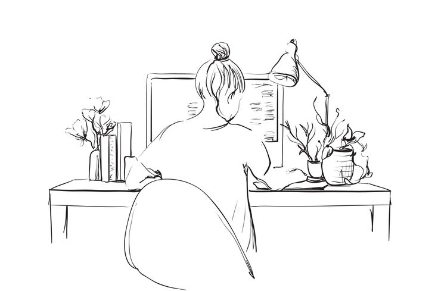

Creative Journaling Ideas
Explore creative journaling ideas that spark your imagination.
Read MoreExplore creative journaling ideas that spark your imagination.
Read More
Discover the top 10 pens that every stationery lover should own.
Read MoreUnleash your creativity with endless patterns, colors, and designs. Discover the magic of washi tapes in every project!
Read MoreTransform your journaling experience with sticky notes! From daily reminders to spontaneous thoughts, these little squares are your perfect sidekicks. Stick them everywhere and never miss a moment of inspiration!
Read MoreHeyy! This is Shalini Juliah. I'm a creative soul with a serious love for web design, all thanks to my obsession with stationery and journaling. My love for pretty notebooks and fancy pens led me to mix creativity with code, crafting websites that are as organized as my planner. I've sprinkled in some handy tips I've picked up along the way, so join me for a fun ride through the world of stationery and design!
